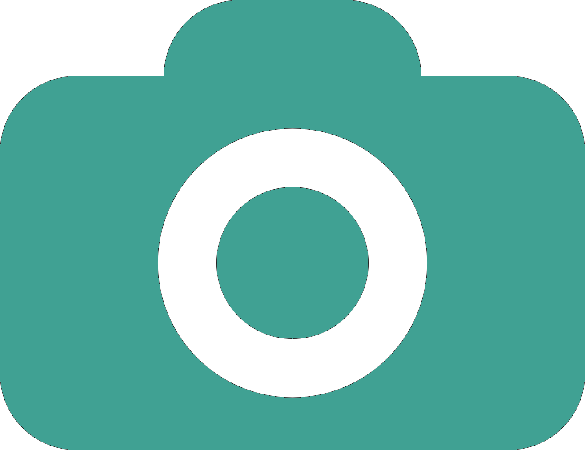
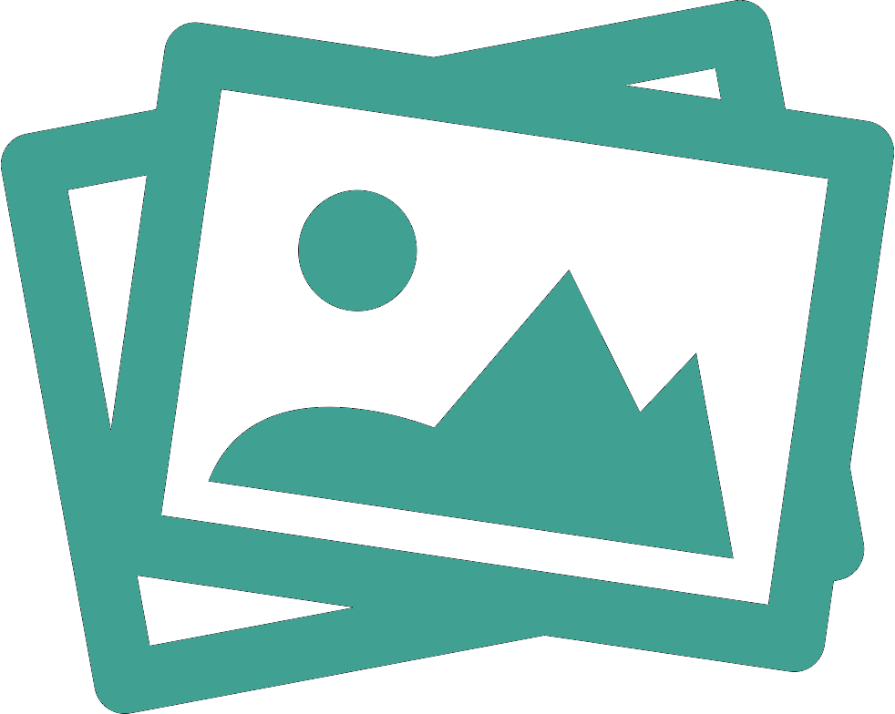

<ion-header>

    <ion-navbar color="navcolour">
  
      <ion-list no-lines color="navcolour">
  
          <ion-item color="navcolour" style="margin-bottom: -15px;">
  
            <!-- <button ion-button icon-only clear (click) = "goBack()" item-start>
              <ion-icon ios="ios-arrow-back" md="md-arrow-back"></ion-icon>
            </button> -->
  
            <h3><span class="f-text">U</span>PLOAD &nbsp;<span class="s-color"><span class="f-text">I</span>MAGE</span></h3>
         
         
            <button ion-button icon-only clear (click) = "goToNextpage()" item-end  style="padding-top: 5px;">
								<h3>SKIP</h3>
            </button>
  
          </ion-item>
  
      </ion-list>
       
    </ion-navbar>
  
  </ion-header>
<!-- <ion-header>

		<ion-navbar color="navcolour">
		 	<ion-title>
			  <h3><span class="f-text">V</span>ISITORS &nbsp;<span class="s-color"><span class="f-text">C</span>HECK</span></h3>
			</ion-title>
	  
		  <ion-buttons end style="padding-top: 5px;">
			<button ion-button icon-only clear (click) = "goToNextpage()">
			  <h3>SKIP</h3>
			</button>
		  </ion-buttons>
		</ion-navbar>

</ion-header> -->
	  
 

<ion-content padding>

	<ion-grid class="bg1" padding style="width: 100%;">
	    <ion-row>
				<ion-col col-12 (click)="takePhoto()">
					
				</ion-col>
		     	<!-- <button ion-button medium (click)="takePhoto()">Take Picture</button> -->
					<h6>Please Open Your Camera</h6>
					
			</ion-row>
			<ion-row style="margin-top: 15px;">
					<ion-col col-12 (click)="uploadPicture()">
							
						</ion-col>
				<!-- <button ion-button medium (click)="uploadPicture()">Upload Picture</button> -->
				<h6>Please Open Your Gallery</h6>
			</ion-row>

			<ion-row margin *ngIf="image">
				<ion-card>
					
				</ion-card>
			</ion-row>

			<!-- <ion-row margin *ngIf="imageSrc">
				<ion-card>
					
				</ion-card>
			</ion-row> -->
	</ion-grid>

</ion-content>

<ion-footer no-shadow>
		<ion-toolbar position="bottom">
			<ion-row no-padding>
				<ion-col col-12 no-padding>
					<button ion-button block class="substyle" color="subbtn" medium (click)="goToNext()">Submit</button>
				</ion-col>
				<!-- <ion-col col-6 no-padding>
					<button ion-button block color="navcolour" large (click)="watchmanReg()">Watchman</button>
				</ion-col> -->
			</ion-row>
		</ion-toolbar>
</ion-footer>


	